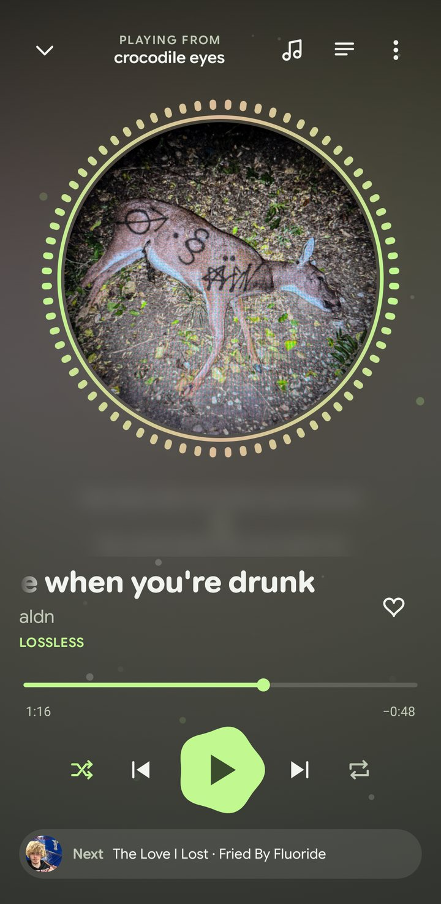

Spotify, redrawn from the inside.
Spatch patches the official Spotify app on your Android phone so it shows a different interface. Spotify's own engine still plays the music.
Unofficial and cosmetic. Needs Android 10 or newer and Spotify 9.2.0.2053.



The cover is the interface.
A round cover circled by bars that move with the music, over a soft blur of its own colours. Everything else steps back.
- Colour from the coverThe glow, the bars and the buttons take their colour from what is playing, and the backdrop rests when you pause.
- A calmer top barSleep timer, devices and share live in one menu. Pin any of them back to the bar in settings.
- Lyrics under the coverTwo lines appear while a song is being sung and tuck away when it isn't.
Lyrics that follow along.
The line being sung is bright and the rest fade away. The column glides to keep it centred, and tapping a line jumps the song there. Try it:
- Every line lights as it is sung.
- The column glides to keep it centred.
- Tap a line and the song jumps there.
- Leave it off if you like the quiet.

Widgets that fit the space you give them.
The cover is always a square, sized to the widget. Stretch the widget tall and it stacks: cover, title, controls. Colours follow the cover, and the play button changes shape when you press it.
A Quick Settings tile does play and pause without opening anything.

18 palettes. You're wearing one now.
Pick any and this whole page changes, the way the app does. Add one from your wallpaper, or set your own colours.
Wearing: the colours of this section
Every piece is a switch.
These are real settings. Flip them and watch the player lose what you don't want.
Patched on your phone, signed with your key.
Spatch Manager does the patching, signing and installing on the phone. Spatch's changes ship as small diffs, never as Spotify's own files.
- Install Spatch ManagerOne small app that does all the work.
- Choose the Spotify fileThe exact supported build, Spotify 9.2.0.2053. The Manager checks it byte for byte and refuses anything else.
- Patch and installOne tap. The build is signed with a key made on your phone.